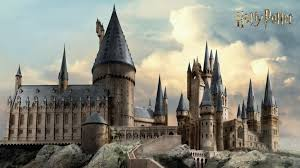

Короткий опис сюжету
Гаррі Поттер живе у родині Дурслів і не знає правди про своє минуле. У день свого одинадцятого дня народження він дізнається, що є чарівником і має навчатися у школі магії Гоґвортс.
У школі Гаррі знаходить друзів, відкриває для себе світ магії та поступово дізнається більше про своїх батьків. Разом із друзями він стикається з небезпекою і розуміє, що його минуле пов’язане з темним чарівником Волдемортом.
Гаррі Поттер
Головний герой книги. Сміливий хлопець, який дізнається про своє чарівне походження.
Рон Візлі
Найкращий друг Гаррі. Добрий, відданий і завжди готовий допомогти.
Герміона Ґрейнджер
Розумна та працьовита учениця, яка часто допомагає друзям знаннями.
Албус Дамблдор
Директор Гоґвортсу. Мудрий чарівник, який підтримує Гаррі.
Атмосфера твору
